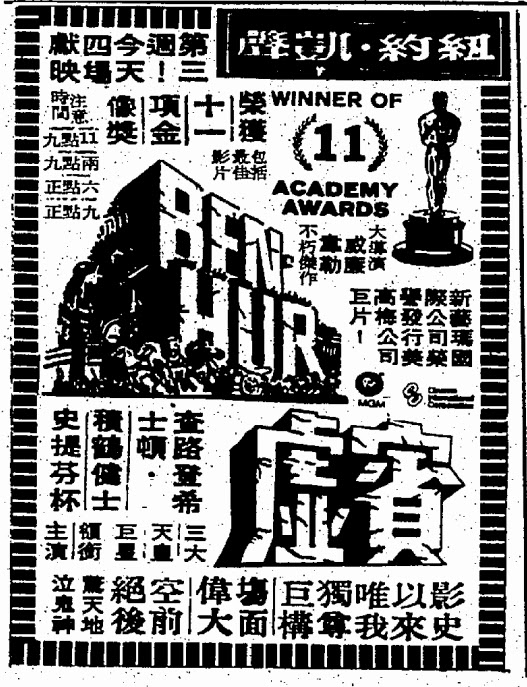

by 馬家輝
立法會未選先淘汰了幾名候選人，其中一個，又簽了確認書，又改了臉書版，卻始終未獲入閘。主要理由據說是，女選舉主任「難以信任」他已痛改前非和實踐承諾，所以，唔該get out，冇得留低。
情景不能不說詼諧滑稽。有點似老公半夜回到家裡，襯衫領上留有唇印，老婆大興問罪之師，老公誓神劈願，無論先前做了什麼壞事，日後答應不會再幹，但老婆說，唔係噃，我知道你在外邊仍對朋友說，一於呃住先，忍辱偷生，以免被趕出家門，日後的事日後再說。所以，老娘唔信你，唔該馬上執包袱走人！... more »
by David Tang
還清楚記得我小時候我看奧運，每當中國女排跟乒乓球贏了，就開心得跳起來，輸了，就急得眼淚快要掉下來，同樣，九二年中國申辦奧運失敗，全家垂頭喪氣，二千年成功了，雖不至於興高采烈，但也挺高興的... more »
by 安裕
星期二晚上的電視新聞，立法會，梁天琦，港獨，提名，選舉主任，不信納，一大堆字眼在混亂的畫面與嘈吵的聲音當中縈繞不去。新聞片段帶出似曾相識的感覺，電視機前想起1983年9月那幾天：中英關於香港前途談判氣氛欠佳引發社會震盪，巿面掀起搶購潮，超級巿場貨架上的廁紙都給買光；港幣牌價一天數變，巿民討論買金條抑或購美元。雖然到了今天沒有搶購日用品或港元匯價波動類似的皮相之談，可是當年全港上下一片茫然「香港往何處去」的渾沌與迷惘，33年之後在過去一星期重現一己眼前。... more »
老駱
呂秉權
窗外颱風打到來，肆虐香港言論自由的猛風亦颳得既急且狠，昔日光輝的老牌媒體被弄得日月無光、言而無信。
上周五，《信報》總編輯郭艷明發電郵通知《信報》前總編輯及主筆、香港一大「健筆」的資深評論人練乙錚，表示因改版，8月1日起「暫停」其專欄。郭在回應《明報》及《蘋果日報》的查詢時解釋，改版要減版控制成本，刪練乙錚的欄無特別原因，「無作者會一生一世」。more »
本土新聞
銅鑼灣書店店長林榮基因人生安全受威脅而缺席七一遊行，之後入住安全屋後約一個月，寫了超過一萬字的文章，他提到自去年十月在深圳被到一個派出所，一個自稱姓李的人指，「你知道你現在是甚麼身份嗎？你搞寄書這種事，意圖推翻中國政府，我們是中央專案組的，我們就是向你這種香港人專政。」另外，林榮基指，負責看守他的史先生曾透露，桂民海將在今年九至十二月判刑。... more »

鵝鑾鼻燈塔
葉劉依家不但長期係立法會議員同行政會議成員中民望最高既一個，而係黎緊既港島區立法會選舉既民意調查佢亦一樣高踞榜首，甚至有機會係比例代表制中拉埋第二名入立會。今年係2016年，而係佢硬銷23條立法果陣係2003年，換句話說佢只係用左十三年就已經成功係香港人心目中果個神憎鬼厭既「掃把頭」完全洗底。佢做過既野，不過係辭官之後去左Stanford 讀書，然後返黎拉攏年輕人成立匯賢智庫。咁就搞掂，佢從不掩飾自己係建制派，係雨傘革命支持警察放催淚彈，亦都反對用特權法查鉛水事件。如果話中產支持佢，咁其實中產不少都係建制派Fans。... more »
老占
美國新經濟代表性企業如Apple、Facebook、Google、Nike等都是以禪宗思想為企業精神源泉的，其中Steve Jobs對禪學的推崇與學習更是世人皆之。從西方國家到日本，今天為什麼商業界正湧動著一股對禪的內心渴求？... more »
石琪
可以說，南韓電影的獨創性不是很高（畢竟，韓國文化受中日和歐美影響很大），但無疑吸收能力強，而且積極求進。在目前東亞各地影壇之中，他們的專業水平可能最好。反觀日本電影，本來是東亞最先進，曾經湧現大師名片，不過黃金時代早已過去，近十多年被南韓後來居上了。... more »
陳美茵
還以為畢業後會一直打工到退休，沒想到未到三十歲、還未成家就「裸辭」。「裸辭」消息一傳出，舊同事居然紛紛問是不是要去嫁人，驚覺在現今的香港，原來還有「辭工去嫁人／嫁人要先辭工」之類的概念，真是無解。大半年前，把日復日碎碎唸式的「為什麼做傳媒一定要這樣這樣」還有「也許傳媒行業可以這樣這樣」的想法認真整理，找來一些拍檔坐在一起，討論把「這樣那樣」落實的可能性。覺得可以一試，就馬上開始下工夫把這個意念實現。... more »
by 蔡詠梅
所謂「舉國體制」，中國官方的解釋是，「指國家綜合實力還比較弱的情況下，為了短時間內形成突破，從而採取集中全國人力、物力、財力進行攻堅的一種組織制度」，簡言之「舉國體制」是調動全社會資力、物力操練少數菁英運動員，盡最大力量在國際大型競賽中奪取最多的獎牌獎杯。此體制因國家的絕對控制壟斷能力及源源不絕用之不竭的財力，確實能將一個與其實際國力、人民身體素質、體育水平不相符合的國家在很短時間送上國際競技大賽的獎牌高峰。
此體制度為蘇聯五十年代所創建，後為絕大多數共產極權國家所仿效，佼佼者有前蘇聯、前東德、前共黨國家羅馬尼亞等，但蘇東波歷史事變後，碩果僅存者只有中國一國，其餘古巴、北韓蕞爾小國不足為道。... more »
露西法
「港女」真係好難頂，我係女仔，我都真係頂唔順。 咁老實講，港女之所以變成「港女」，當然唔係因為佢地生出黎就已經咁乞人憎啦。... more »